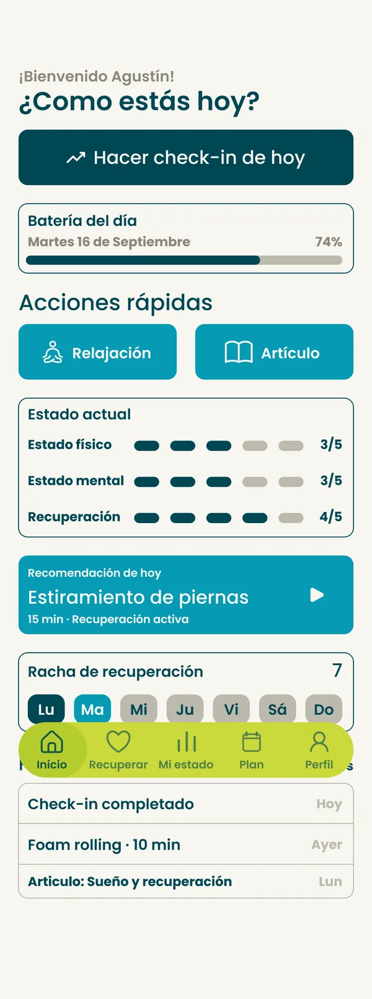

Recuperar también
es entrenar.
Con Piki acompañamos a deportistas juveniles en formación a cuidar lo que pasa fuera de la cancha: descanso, sueño, nutrición, movilidad y cabeza. En este manual reunimos todo lo necesario para que la marca se vea, suene y funcione igual en cada punto de contacto.
Presentación
Introducción
Piki es la solución que desarrollamos para los deportistas en formación. Este manual de marca refleja la identidad que venimos desarrollando a lo largo del proyecto, para consultarla y aplicarla con coherencia.
Lo pensamos para diseñadores, desarrolladores, comunicadores, sponsors y profesionales que produzcan piezas de Piki. Cada sección la abrimos con una introducción, desarrollamos los elementos con ejemplos interactivos y la cerramos con una conclusión sobre su función dentro del conjunto.
Nombre
El nombre que usamos en las etapas 1 a 4
El nombre que elegimos
El nombre Piki nace de una identidad que construimos como grupo a lo largo del tiempo. Comenzó como un nombre que usábamos para identificar nuestros proyectos y, con el tiempo, terminó convirtiéndose en una marca propia que representa nuestra forma de trabajar y desarrollar nuevas ideas.
Al principio, para este proyecto elegimos el nombre PikiRecovery, porque hacía referencia a la temática de la recuperación deportiva. Sin embargo, al revisar la propuesta, decidimos simplificarlo a Piki. Este cambio nos permitió construir una identidad más sólida, versátil y fácil de recordar, sin quedar asociada exclusivamente a una única función o temática.
Elegimos Piki porque es un nombre breve, distintivo y fácil de pronunciar, cualidades que favorecen su reconocimiento y recordación. Además, su simplicidad permite que la marca se adapte con facilidad a distintos soportes, como la aplicación móvil, la identidad visual, las redes sociales y futuras iniciativas relacionadas con el bienestar y el deporte.
Más que describir literalmente el servicio, Piki busca transmitir una identidad propia. Es un nombre creado para representar una marca cercana, dinámica y con potencial de crecimiento, que acompaña la evolución del proyecto sin limitarlo a un único concepto.
Claim y bajada
Recuperar también
es entrenar.
Claim principal. Con esta frase resumimos el concepto: el descanso no es lo opuesto al esfuerzo, es parte del entrenamiento. Lo usamos en piezas de alto impacto, cierre de videos, merchandising y portada de la web.
Logo principal
Diseñamos el signo de Piki como una P en movimiento: su contraforma dibuja a una persona. La letra contiene a la figura, como el entrenamiento contiene a la recuperación.
Ir al sistema de logotipo →Origen del proyecto
Piki es el resultado de nuestro Trabajo Integrador Final, que desarrollamos en cuatro etapas. En cada una sumamos una plataforma al ecosistema, y con este manual las unificamos.
Por qué importa
Partimos de una idea: la recuperación física y mental define el rendimiento tanto como el entrenamiento, pero en la etapa formativa casi nadie la enseña ni la registra.
A quién ayudamos
A deportistas de 14 a 20 años y a su entorno: entrenadores, kinesiólogos, psicólogos deportivos y familias.
Qué proponemos
Queremos convertir el descanso, el sueño, la nutrición y la gestión emocional en hábitos visibles, simples y medibles.
Contenido
En la introducción presentamos lo esencial de la marca y el recorrido que le dio origen. Con el cambio a “Piki” volvimos la marca más cercana y escalable, y con el claim resumimos la idea que ordena todo el sistema: la recuperación es parte del entrenamiento.
Pensamos el manual como una herramienta de trabajo y no como un documento de archivo: en él ordenamos las decisiones de diseño, las justificamos y las volvemos aplicables. Lo estructuramos de lo conceptual a lo concreto, para que cualquier persona pueda producir material consistente sin depender de nosotros.
Plataforma de marca
Identidad de marca
Piki nace de una investigación que hicimos sobre recuperación física y mental en deportistas juveniles. Detectamos que todo lo que pasa fuera del entrenamiento, como dormir, comer, hidratarse, elongar o gestionar el estrés, es un “trabajo invisible” que casi nadie registra, y que define el rendimiento tanto como la práctica.
En esta sección definimos el concepto, la misión, la visión, los valores, el público, la personalidad y la voz de Piki, e incluimos el relevamiento de competidores que fundamenta nuestras decisiones. La comunicación es cercana, profesional, dinámica, innovadora y educativa.
Concepto: el trabajo invisible
Hacer visible lo que no se ve
El rendimiento deportivo se construye también en las horas que no se ven: el sueño, la comida, la hidratación, las pausas y el manejo de la presión. Con Piki convertimos esas acciones cotidianas en algo que se puede registrar, entender y mejorar. En el signo lo expresamos con una figura humana dibujada en la contraforma de la P: el cuerpo aparece en el vacío, en lo que no se ve.
Propósito
Que los deportistas en formación entiendan que cuidarse es parte de entrenar, y tengan herramientas simples para hacerlo todos los días junto a su entorno: entrenadores, familia y profesionales de la salud.
Misión
Acercar conocimiento confiable sobre recuperación física y mental a través de experiencias digitales, lúdicas y presenciales.
Visión
Una generación de deportistas que rinde más porque sabe parar, descansar y escucharse.
Valores
Cuidado
El cuerpo y la cabeza importan tanto como el resultado.
Conocimiento
Información validada por profesionales, explicada en simple.
Constancia
Los hábitos chicos y diarios hacen la diferencia.
Comunidad
Nadie se recupera solo: equipo, familia y profesionales.
Público
El público primario son deportistas de 14 a 20 años en etapa formativa. El secundario incluye a quienes los acompañan: entrenadores, kinesiólogos y psicólogos deportivos.
Quiero mejorar mi rendimiento, pero todavía tengo mucho que aprender sobre cómo recuperarme.
Entrenar bien es importante, pero también necesito saber cómo ayudar a mis jugadores a recuperarse.
Quiero que la recuperación deje de ser lo que se hace cuando ya hay una lesión.
El estrés no gestionado afecta la recuperación física del deportista.
Ecosistema de marca
Pensamos Piki como una propuesta transmedia: cada plataforma cumple una función distinta y todas comparten la misma identidad. Tocá cada una para ver su rol.
Voz y tono
Piki habla como un compañero de equipo que sabe del tema: cercano, claro y motivador, pero con información confiable detrás. La voz es siempre la misma. El tono se ajusta según el canal y el momento del usuario.
Personalidad de marca
Principios de escritura
Hablamos de vos
Usamos voseo rioplatense y segunda persona: “Recuperá”, “Viví”, “¿Cómo estás hoy?”.
Simple primero
Frases cortas. Si un término técnico es necesario, lo explicamos en la misma oración.
Motivamos sin presionar
Nunca culpamos al usuario por no descansar. Celebramos lo que sí hizo.
Respaldamos lo que decimos
Validamos los consejos de salud con profesionales y no prometemos resultados mágicos.
Referentes y competencia
Antes de definir el sistema analizamos cómo comunican visualmente las marcas que hablan de recuperación, rendimiento y bienestar. Buscamos detectar códigos de la categoría para tomar lo que funciona y encontrar el espacio libre donde Piki puede diferenciarse.
Qué tomamos de cada referente
No copiamos a ninguna marca: de cada una tomamos un recurso puntual y lo adaptamos a lo que necesita un deportista en formación.
Piki
- Tipografía
- Poppins
- Imagen
- Deportistas juveniles recortados en B/N con puntos articulares
- Tono
- Cercano, claro, motivador y respaldado
- Interfaz
- App clara, juego oscuro, mismos componentes
Diferencial: combinamos el rigor de la recuperación deportiva con un lenguaje cercano, pensado para deportistas en formación.
- WHOOPEstados por color
Del semáforo de recuperación sacamos los colores funcionales del juego, sin la estética de élite que aleja al público juvenil.
- OuraUn puntaje diario
Lo convertimos en la Batería del día: un solo número para saber cómo estás, contado sin lenguaje clínico.
- Garmin ConnectDatos de wearables
Sincronizamos con el reloj, pero mostramos un dato por tarjeta para que se entienda de un vistazo.
- StravaRachas y desafíos
Los usamos para sostener la constancia, sin rankings ni comparación entre usuarios.
- Nike Training ClubEl atleta en acción
Fotografía en blanco y negro de deportistas reales, con el color de la marca sumado sobre la imagen.
- HeadspaceFormas amables
Curvas redondeadas y un tono cálido para hablar de recuperación mental sin solemnidad.
- CalmDegradés de calma
Fondos difusos que bajan el ritmo, llevados a nuestra paleta de petróleo, celeste y lima.
- TherabodyLo que no somos
Ahí nos diferenciamos: no vendemos dispositivos, enseñamos hábitos de recuperación que no necesitan equipamiento.
Hallazgos aplicados a Piki
La categoría es oscura y fría
Negro, blanco y grises dominan los wearables y dispositivos. Comunican tecnología y élite, pero alejan a un deportista de 16 años. Por eso usamos petróleo en lugar de negro y sumamos crema, celeste y lima para sumar calidez y energía.
Los datos necesitan un traductor
Las apps de rendimiento muestran números que el público juvenil no sabe interpretar. Tomamos la claridad de sus dashboards pero los traducimos a lenguaje cotidiano: “Batería del día” en lugar de “HRV”.
El bienestar mental es amable
Las apps de meditación usan formas redondeadas, ilustración y tono cálido. Incorporamos esa amabilidad en la tipografía geométrica redondeada y en las curvas del sistema.
Las personas reales generan identificación
Las marcas deportivas masivas muestran atletas en acción. Lo adoptamos con un tratamiento propio: fotos recortadas en blanco y negro con puntos articulares que revelan lo que pasa “por dentro”.
El color semántico ordena
Los wearables usan verde, amarillo y rojo para indicar estados de recuperación. Lo aplicamos en el videojuego con una paleta funcional propia, separada de la paleta institucional.
Nuestro espacio
Nadie ocupa el lugar de la recuperación cercana y formativa para juveniles. Ahí nos paramos con Piki: con el rigor de lo técnico, pero hablando como un compañero de equipo.
Apoyamos la plataforma de marca en una idea simple y diferencial: la recuperación es entrenamiento. El concepto del trabajo invisible le da al sistema un hilo común: cada pieza tiene que hacer visible algo que normalmente pasa desapercibido.
Una voz consistente hace que Piki se reconozca aunque no se vea el logo. La combinación de cercanía y respaldo profesional es lo que permite hablarle a la vez al deportista y a su entorno: el mismo mensaje puede ser lúdico en el videojuego y preciso en una invitación a profesionales, sin dejar de sonar a Piki.
Con el relevamiento vimos una categoría polarizada entre lo técnico-élite y lo amable-genérico. Ubicamos a Piki en el cruce: tomamos la claridad de los datos y la energía del deporte, y la combinamos con la calidez del bienestar. Estas conclusiones justifican las decisiones de color, tipografía, fotografía y tono que desarrollamos en las secciones siguientes.
Identidad visual
Sistema de logotipo
El signo de Piki es una P que contiene a una persona. La letra, inclinada hacia adelante, construye la estructura y el impulso. Adentro, su contraforma dibuja a un deportista, con la cabeza calada y el cuerpo que se estira. Es la idea del trabajo invisible hecha forma: la figura aparece en el vacío, en lo que no se ve.
Tiene tres versiones: el isotipo (la P), el isologo (la P funciona como inicial de PIKI, con la bajada “Recuperación para deportistas”) y el logotipo (PIKI en mayúsculas, línea y bajada). En esta sección definimos su anatomía, construcción, versiones, área de resguardo, tamaños mínimos y usos correctos e incorrectos.
Anatomía del isotipo
Construcción
El módulo x es el diámetro de la cabeza. El isotipo mide 6x de ancho por 4,7x de alto y sus laterales tienen una inclinación constante de 13°, que le da dirección y avance. La cabeza y la curva son contraformas: la figura se dibuja con el vacío, por eso nunca se rellenan ni se reemplazan por otro color.
Versiones del signo
El isologo es la versión principal. Usamos el logotipo cuando conviene una lectura tipográfica o el isotipo ya aparece en la pieza. El isotipo lo reservamos para formatos donde la marca ya está presente o el espacio es mínimo (avatar, ícono de app, favicon).
Logo en movimiento
Cada versión tiene su animación de entrada, y una transición las encadena. El movimiento repite la idea del signo: un cuerpo que arranca, se estira y queda en equilibrio. Las usamos al inicio y al cierre de videos, en pantallas de carga y en redes.
Área de resguardo
Alrededor del signo reservamos un espacio libre igual a x: el diámetro de la cabeza en el isotipo y el isologo, y el ancho del asta de la I en el logotipo. Ningún texto, imagen o borde puede invadir esa zona.
Tamaño mínimo
Versiones cromáticas
Sobre fotografía
Sobre fotografías el signo va en blanco (o petróleo sobre fondos claros) en una zona de bajo ruido visual, respetando el área de resguardo. Si el fondo es complejo aplicamos un velo petróleo del 40–60%.
Usos correctos e incorrectos
El signo se usa siempre a partir de los archivos originales, sin modificarlo. Estos ejemplos muestran cómo aplicarlo bien y los errores más comunes que tenemos que evitar.
Usos correctos
Usos incorrectos
Convivencia con otros signos
El signo condensa toda la plataforma de marca: estructura y pausa, letra y persona. Su construcción modular a partir de la cabeza permite reproducirlo con precisión, y el sistema de versiones, resguardos y tamaños mínimos garantiza que se lea igual en un cartel de tres metros o en un favicon de 16 píxeles.
Identidad visual
Sistema cromático
La paleta combina la profundidad del petróleo, que transmite calma, confianza y salud, con la energía del celeste y el lima, que remiten al agua, la hidratación y el movimiento. Usamos crema en lugar de blanco puro para dar calidez y bajar la fatiga visual.
Hay tres niveles: principales (identidad), secundarios (soporte, neutros y matices) y funcionales (estados del videojuego). Hacé clic en cualquier color para copiar su código.
Principales
Secundarios
Proporción de uso
En una pieza típica, el petróleo y el crema dominan, el celeste estructura y el lima lo usamos como acento puntual para destacar la palabra clave, una fecha o un llamado a la acción.
Paleta funcional de Piki Game
En el videojuego usamos un modo oscuro con colores de significado fijo. Cada etapa y cada estado tiene un color propio que no se usa con otro fin.
Degradés
Contraste y accesibilidad
Elegí un color de texto y uno de fondo para comprobar si la combinación cumple con las pautas WCAG 2.1.
Recuperá
La batería del día está al 74%. Hacé tu check-in.
Matriz de combinaciones aprobadas
La paleta es reconocible y funcional al mismo tiempo: los principales construyen identidad, los secundarios dan aire y los funcionales comunican estados sin ambigüedad. La matriz de contraste asegura que cada combinación usada sea legible, algo central para una marca que incluye a deportistas con baja visión entre sus usuarios.
Identidad visual
Sistema tipográfico
Usamos Poppins en todo el sistema y en todas las plataformas: es geométrica, redonda y muy legible en pantallas chicas y a distancia. Para titulares, números y señalética usamos su versión ExtraBold en cursiva, la misma voz inclinada del logotipo.
Es gratuita en Google Fonts (licencia OFL), lo que facilita su uso por cualquier persona del equipo, sponsors o proveedores sin costos de licencia.
Aa
Poppins
Principal · interfaz, textos, titulares, logotipo
Aa
Poppins ExtraBold Italic
Display · titulares, números, señalética
Siempre en mayúsculas, nunca en párrafos ni en textos de menos de 18 px.
Probador tipográfico
Jerarquía de la app
Estos son los estilos de texto de Piki App: seis niveles de títulos y tres de párrafos, con ejemplos de sus pantallas.
Interlineado
Títulos: 110–120%. Párrafos: 150–160%. Nunca menos de 100%.
Alineación
Siempre a la izquierda en textos. Centrado solo en titulares cortos de piezas gráficas.
Destacados
La palabra clave del titular se destaca en lima (sobre petróleo) o celeste (sobre claro), nunca con subrayado.
Una sola familia con roles bien separados da unidad sin perder variedad: Poppins en sus pesos regulares sostiene la lectura y la interfaz, y su ExtraBold en cursiva aporta el carácter deportivo de los titulares, igual que el logotipo. La jerarquía definida para pantalla e impreso permite que un mismo contenido mantenga su orden de lectura en la app, la web, un afiche o la señalética del evento.
Recursos visuales
Recursos gráficos
El sistema gráfico de Piki se apoya en dos recursos propios: los puntos articulares y la iconografía. Juntos permiten construir piezas reconocibles aun sin mostrar el logo.
Cada recurso tiene una función y reglas de combinación con el logotipo, el color y la tipografía.
Puntos articulares
Sobre la fotografía del deportista marcamos las articulaciones con círculos y las unimos con líneas finas. El recurso visualiza el “trabajo invisible”: lo que el cuerpo hace y necesita aunque no se vea. Pasá el cursor por cada punto.
Reglas
Círculos de 2–3% del alto de la figura · líneas de 1,5 px · máximo 12 puntos · nunca sobre el rostro · un solo color por pieza.
Iconografía
Los íconos de Piki son lineales, de trazo redondeado y geometría simple, coherentes con Poppins y con las curvas del signo. Su función es orientar rápido: identificar secciones, acciones y hábitos de recuperación sin necesidad de leer.
Especificaciones
Construcción
Grilla de 24 px · trazo 2 px · terminaciones redondas · radio de esquinas 2 px · área viva de 20 px. Las formas se apoyan en círculos y cuadrados para mantener el mismo peso visual.
Tamaños
16 px (inline), 20 px (navegación), 24 px (estándar), 32–48 px (destacados y señalética digital).
Color
En la app: petróleo sobre crema y blanco sobre celeste. En el juego: turquesa de acción sobre fondo oscuro. Los íconos de estado heredan el color semántico de la paleta funcional.
No hacer
No mezclar con íconos rellenos de otras librerías, no cambiar el grosor del trazo ni agregar sombras.
Los recursos gráficos amplían el lenguaje de la marca más allá del logo y la paleta. Al derivar del concepto y del propio isotipo, son flexibles pero no arbitrarios: una foto de un deportista con sus puntos articulares se reconoce como Piki aun sin el logo.
Una familia de íconos propia y homogénea refuerza la identidad incluso en los detalles más chicos de la interfaz. Al compartir trazo, radios y geometría con la tipografía y el signo, los íconos se integran naturalmente en la app, el juego, la web y la señalética del evento, y facilitan la navegación de usuarios con distintos niveles de lectura.
Recursos visuales
Fotografía y audiovisual
Mostramos deportistas jóvenes reales, en movimiento y de distintas disciplinas. El tratamiento es siempre el mismo: figura recortada en blanco y negro sobre fondos de la paleta, con manchas de color que le devuelven energía.
El blanco y negro unifica fotos de distinto origen y deja que el color lo aporte la marca. En video mantenemos el mismo criterio y sumamos reglas de movimiento, subtítulos y formatos.
Tratamiento
Arrastrá el control para comparar una foto sin tratar con la versión de marca.
Quiénes
Deportistas de 14 a 20 años, diversidad de géneros, disciplinas y cuerpos, incluido el deporte adaptado.
Cómo
En acción o en pausa consciente. Expresiones reales, nunca poses de catálogo ni sufrimiento exagerado.
Tratamiento
Recorte limpio, escala de grises con contraste +10%, grano sutil. El color va en fondo y recursos.
Evitar
Lesiones explícitas, ambientes de gimnasio genéricos, filtros de color sobre la figura o fondos fotográficos recargados.
Criterios de imagen
Tipos de imagen
Atleta recortado en acción, retrato de profesionales, detalle de hábitos (agua, comida, descanso) y espacios del evento.
Iluminación
Luz natural o de estudio suave, lateral, con sombras definidas que modelen el cuerpo. Nunca flash directo ni contraluces quemados.
Encuadre
Cuerpo entero o plano americano para el movimiento, y plano medio para profesionales. Dejar aire hacia donde mira o avanza la figura.
Tratamiento de color
Figura en blanco y negro con contraste +10%. El color lo aportan el fondo, las manchas y los recursos de la marca.
Deportistas y profesionales
Personas reales y diversas. Los profesionales se muestran cercanos, en contexto de trabajo y nunca con estética hospitalaria.
Recuperación y bienestar
Momentos de pausa consciente: respirar, elongar, hidratarse, dormir. La calma también se muestra con energía.
Banco de imágenes
Video y motion
16:9 · Web y pantallas del evento
Estructura de un video Piki
- 0–2 s · Gancho: deportista en movimiento + pregunta o dato.
- Desarrollo: placas en petróleo con zócalos lima, máximo 7 palabras por placa.
- Cierre: claim + una de las animaciones del logo.
- Subtítulos siempre: Poppins Medium, fondo negro 65%, centrados en el tercio inferior.
- Bug: isotipo blanco al 90% en la esquina superior derecha.
Formatos
Un tratamiento fotográfico único permite combinar imágenes de muchas fuentes, como producción propia, bancos o generación asistida, sin que el sistema se fragmente. En video, las mismas reglas de color, tipografía y movimiento hacen que un TikTok, un reel y las pantallas del evento se perciban como parte de una misma historia.
Aplicaciones
Aplicaciones de marca
Así aplicamos la identidad en situaciones reales, divididas en aplicaciones físicas y digitales. Cada ejemplo demuestra cómo el sistema se adapta a formatos muy distintos sin perder coherencia.
Todas las piezas usan el mismo núcleo, con signo, paleta, Poppins, íconos y recursos, y con la intensidad adaptada a su función: más aire en la app, más energía en redes, más contraste en el juego y la señalética.
Aplicaciones físicas
Las piezas impresas del Evento Piki. Elegí cada una para verla y descargar su archivo de imprenta.

Diseñamos un cartel para cada sector del pabellón: el nombre en Poppins, una bajada en lima que explica qué se hace ahí y el isologo abajo. La P de fondo, como marca de agua, y la curva lima arman un sistema que se reconoce desde cualquier punto del evento. Tocá cada miniatura para ver el cartel.


Las credenciales identifican a cada rol con una franja de color, la foto, el nombre y un QR. En el dorso van los términos de uso y la firma de la organización. La pulsera de acceso general lleva la fecha, el número de pase y el isologo, y se cierra con un adhesivo en el extremo. Pasá el mouse sobre una credencial (o tocala en el celular) para ver el dorso.
La guía del visitante es un tríptico A4 que se entrega en la acreditación. Afuera tiene la portada con la fecha y el lugar, la agenda del día, las charlas y el QR a las redes. Adentro, el mapa del pabellón con el recorrido y todos los sectores.

La entrada llega por mail al confirmar la compra: tiene el QR de acceso, la fecha, el horario y el lugar, el detalle de la compra y los tres pasos para el día del evento.
Aplicaciones digitales
Las plataformas y piezas digitales del ecosistema. Todas son interactivas: probá el prototipo de la app y jugá la versión web del videojuego.
La web es el centro de información del ecosistema: presenta el proyecto, la app, el juego y el evento, y concentra la venta de entradas. Usa el degradé profundo en el hero, grilla de 12 columnas y los mismos componentes del UI kit. Este es el sitio real: se puede navegar y desplazar acá mismo, en versión escritorio o celular.

Piki App
Las pantallas principales de la app, en un iPhone 16 Pro (402 × 874 pt). Elegí una para verla. Con “Probar el prototipo” se carga el prototipo de Figma y podés navegar la app como un usuario.
“¿Cómo estás hoy?”: el check-in, la batería del día, acciones rápidas y la racha.
- Fondo crema y superficies blancas para bajar la carga visual.
- Petróleo para acciones primarias, celeste para acciones rápidas y contenidos.
- La barra de navegación en lima es el único gran bloque de acento: ancla la marca en cada pantalla.
- Lenguaje cotidiano: “Batería del día”, “¿Cómo estás hoy?”.
El videojuego (VR y web) simula la recuperación postpartido en tres etapas: física, nutricional y de vuelta a la calma. Usa la paleta funcional en modo oscuro y los mismos componentes del UI kit con piel “game”. Esta es la versión web real: jugala acá o en pantalla completa.

Tocá a la derecha para avanzar y a la izquierda para volver.
Instagram es nuestro canal principal antes, durante y después del evento. Las piezas alternan fondo petróleo y crema para armar una grilla rítmica, con el atleta recortado como protagonista y la palabra clave en lima.
En TikTok ampliamos el alcance con contenido breve y dinámico: rutinas de recuperación, consejos de nutrición y lo que pasa en el evento. Usamos el formato vertical 9:16 con el isotipo siempre visible, textos cortos en Poppins y la palabra clave en lima. Los primeros segundos muestran al atleta en movimiento para frenar el scroll.
@pikirecovery #pikirecovery #recuperacion #salud · Ver en TikTok ↗
El ícono de la app usa el isotipo blanco sobre petróleo, centrado y con un margen del 18%. Lo exportamos para iOS (1024 px) y Android (512 px, adaptativo). El favicon lo exportamos en SVG y PNG.

Las aplicaciones demuestran que el sistema resiste contextos muy distintos, como una pantalla de 6 pulgadas, un visor de realidad virtual, un feed o un pabellón de exposiciones, sin perder identidad. La clave está en un núcleo fijo (signo, paleta, tipografía, recursos) y en reglas claras sobre cómo modular su intensidad según la función de cada plataforma.
Las piezas básicas trasladan la identidad a los objetos y canales de todos los días. Al estar construidas con los mismos elementos y reglas del sistema, cualquier persona del equipo puede generar una firma, un avatar o una presentación coherente sin rediseñar desde cero, y el merchandising extiende la experiencia del evento a la rutina del deportista.
Interfaz
Sistema de diseño UI
En el UI kit reunimos los componentes de Piki App, tal como están en el archivo de Figma. Son las piezas con las que armamos cada pantalla de la app.
Construimos todo sobre una cuadrícula base de 10 px, radio de 10 px y espaciado vertical de 20 px. Todos los componentes de abajo son funcionales: probalos.
Componentes de la app
Son los componentes de Piki App tal como están en Figma: mismas medidas, colores, radios y tipografía. Elegí cada estado en la galería de abajo para verlo aplicado en el componente.
Navegación
Recuperar
Inicio
Mi estado
Plan
Perfil
Recuperar
Inicio
Mi estado
Plan
Perfil
Recuperar
Inicio
Mi estado
Plan
Perfil
Recuperar
Inicio
Mi estado
Plan
Perfil
Recuperar
Inicio
Mi estado
Plan
Perfil
Iniciar sesión
Registrarse
Iniciar sesión
Registrarse
Todos
Tren superior
Tren inferior
Zona media
Todos
Tren superior
Tren inferior
Zona media
Todos
Tren superior
Tren inferior
Zona media
Todos
Tren superior
Tren inferior
Zona media
Todos
Tren superior
Tren inferior
Zona media
Todos
Sueño
Recuperación
Salud mental
Fatiga
Todos
Sueño
Recuperación
Salud mental
Fatiga
Todos
Sueño
Recuperación
Salud mental
Fatiga
Todos
Sueño
Recuperación
Salud mental
Fatiga
Todos
Sueño
Recuperación
Salud mental
Fatiga
Todos
Todos
Botones
Guardar ejercicio
¡Ejercicio guardado!
Guardar artículo
¡Artículo guardado!
Guardar receta
¡Receta guardada!
Desbloquear desafío
Desafío desbloqueado
Check-in y selección
Estado físico general
1
2
3
4
5
Muy bajo
Muy alto
Estado físico general
1/5
1
2
3
4
5
Muy bajo
Muy alto
Estado físico general
2/5
1
2
3
4
5
Muy bajo
Muy alto
Estado físico general
3/5
1
2
3
4
5
Muy bajo
Muy alto
Estado físico general
4/5
1
2
3
4
5
Muy bajo
Muy alto
Estado físico general
5/5
1
2
3
4
5
Muy bajo
Muy alto
Regular
Regular
Veces
Descripción
Veces
Descripción
Veces
Descripción
Veces
Descripción
Lu
Lu
Formularios
Nombre del evento
Examen inglés
Deporte
Fútbol
Lugar
Médico
Texto
Texto
Fecha
18/09/2026
Hora
15:00
Examen
Gimnasio
Entrenamiento
Competencia
Examen
Gimnasio
Entrenamiento
Competencia
Examen
Gimnasio
Entrenamiento
Competencia
Examen
Gimnasio
Entrenamiento
Competencia
Examen
Gimnasio
Entrenamiento
Competencia
Mapa corporal
¿Cómo sentís esta zona?
Fatiga
Molestia
Dolor
Componentes del videojuego
Estos son los componentes de la interfaz de Piki Game, tal como aparecen en la versión web del juego. Usan la paleta funcional en modo oscuro: paneles translúcidos sobre la escena 3D, botones en menta, un color de acento por etapa y colores de severidad para las señales del cuerpo. Elegí cada estado en la galería de abajo para verlo aplicado en el componente.
Botones y selección
Indicadores
Respuesta y resultados
Respuesta correcta · Masaje de descarga
Mové la pelota en círculos para hacer el masajeNo es la mejor opción para esta situación.
El frío contrae todavía más el músculo: una zona rígida necesita relajarse y recibir circulación.Probá con otra herramienta.Zona recuperada · acertaste a la primera
El masaje de descarga relaja el músculo cargado, alivia la sensación de fatiga y devuelve movilidad.Grillas
Usamos dos grillas: la de la app, en el celular, y la de la página web, en pantallas grandes. Las vistas muestran la app y la web reales con sus columnas encima.


| Grilla | Pantalla | Columnas | Medianil | Margen | Navegación |
|---|---|---|---|---|---|
| Mobile · app | 402 px de ancho · el alto depende de cada pantalla | 2 | 20 px | 20 px | Barra inferior lima |
| Desktop · web | Diseño a 1920 px · contenedor de 1530 px | 12 | 32 px | 195 px | Barra superior completa |
Al reunir los componentes de la app en un mismo sistema, diseñamos cada componente una vez y lo reutilizamos en todas las pantallas. Esto asegura consistencia funcional, porque un botón primario siempre se comporta igual, y visual, y reduce el tiempo de diseño y desarrollo de nuevas pantallas. Las grillas de la app y de la web ordenan el contenido, y los estados claros, el área táctil mínima y el contraste controlado sostienen la accesibilidad.
Recursos
Descargas
Todo lo necesario para producir piezas de Piki, listo para usar. Armá tu propia versión del logo con el generador o descargá el kit completo.
Los archivos SVG son vectoriales y sirven para impresión y web. Los PNG se generan en el tamaño que elijas, con fondo transparente o de color.
Generador de logo
Archivos


Facilitar el acceso a los archivos originales es la mejor forma de evitar usos incorrectos: si el logo correcto está a un clic, nadie necesita recortarlo de una captura. El generador y el kit hacen que el manual no solo explique la marca, sino que la entregue lista para aplicar.
Cierre
Conclusión general
Piki nació de una pregunta que nos hicimos al comenzar el Trabajo Integrador Final: qué pasa con todo lo que los deportistas juveniles hacen, o dejan de hacer, fuera del entrenamiento. La investigación nos mostró que dormir, alimentarse, hidratarse, elongar y gestionar el estrés definen el rendimiento tanto como entrenar, pero en la etapa formativa casi nadie lo enseña ni lo registra. A ese conjunto de hábitos lo llamamos “trabajo invisible”, y todo el proyecto se construyó para hacerlo visible.
A lo largo de las etapas transformamos esa idea en un ecosistema. Diseñamos Piki App como una herramienta diaria de check-in, mapa corporal y seguimiento de la recuperación. Creamos un videojuego para realidad virtual y web que simula la recuperación postpartido. Organizamos el Evento Piki para vivir la recuperación junto a profesionales, y sumamos una página web y redes sociales para comunicar todo el proyecto. Cada plataforma resuelve una parte del problema, pero juntas proponen algo más amplio: que la recuperación se vuelva un hábito.
Este manual es el último paso de ese recorrido. En él reunimos y ordenamos todas las decisiones de diseño que tomamos en el camino. Simplificamos el nombre a Piki, dibujamos una P en movimiento que contiene a una persona, definimos una paleta que combina calma y energía, elegimos Poppins como única familia tipográfica y construimos un sistema de componentes, íconos, recursos gráficos y reglas de fotografía y video. Al unificarlas, la marca habla igual en una pantalla de celular, en un visor de realidad virtual, en un feed o en un pabellón de exposiciones.
Como equipo, el proyecto nos permitió recorrer todo el proceso de diseño, desde la investigación hasta la aplicación concreta, y comprobar que una identidad sólida no depende de cada pieza por separado, sino de la coherencia del conjunto. Pensamos el manual como una herramienta de trabajo para que cualquier persona pueda seguir produciendo material de Piki con criterio, y para que la marca pueda crecer hacia nuevas plataformas e iniciativas sin perder su esencia.
Piki es nuestra forma de decirles a los deportistas en formación que el rendimiento también se construye fuera de la cancha. Porque recuperar también es entrenar.